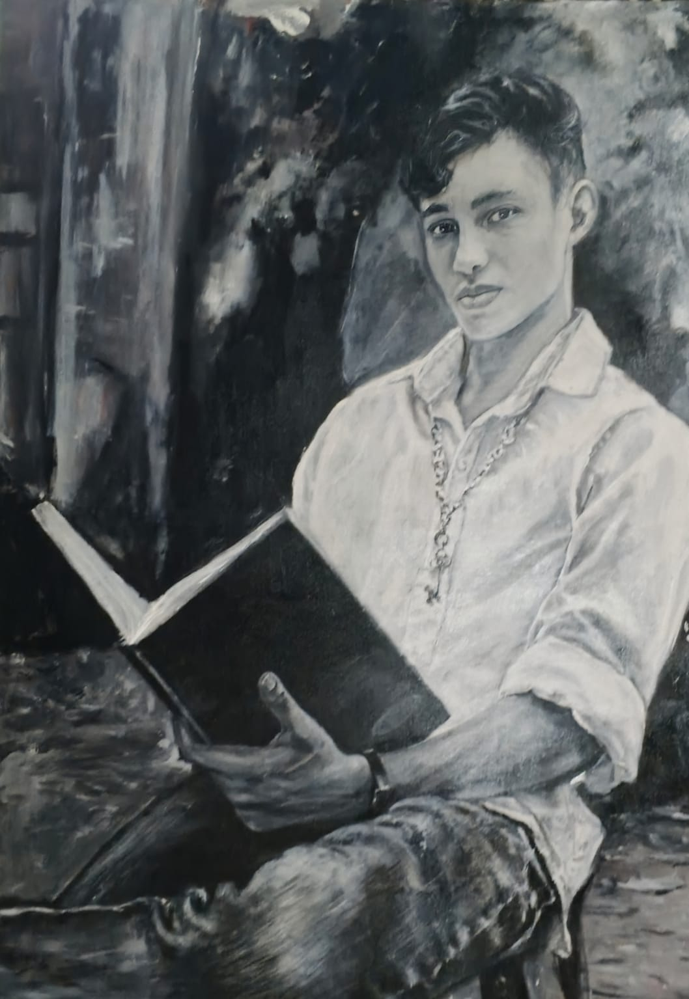
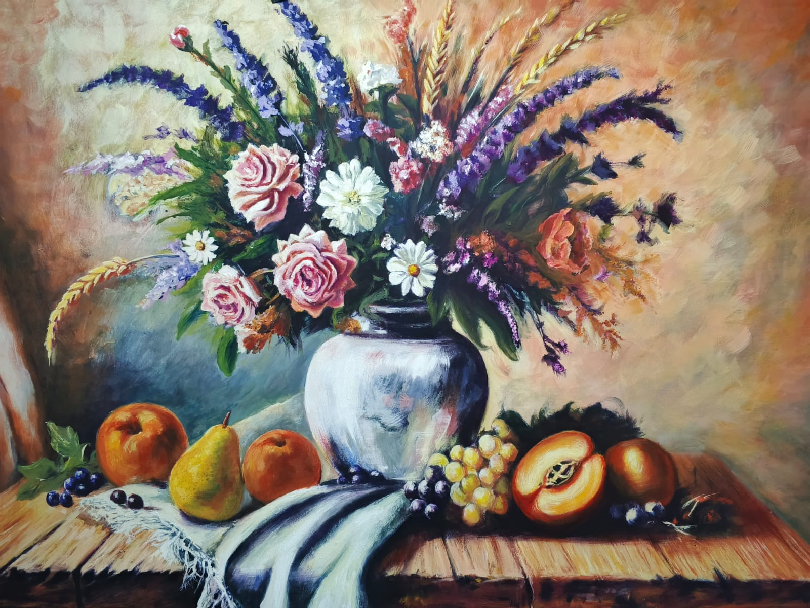
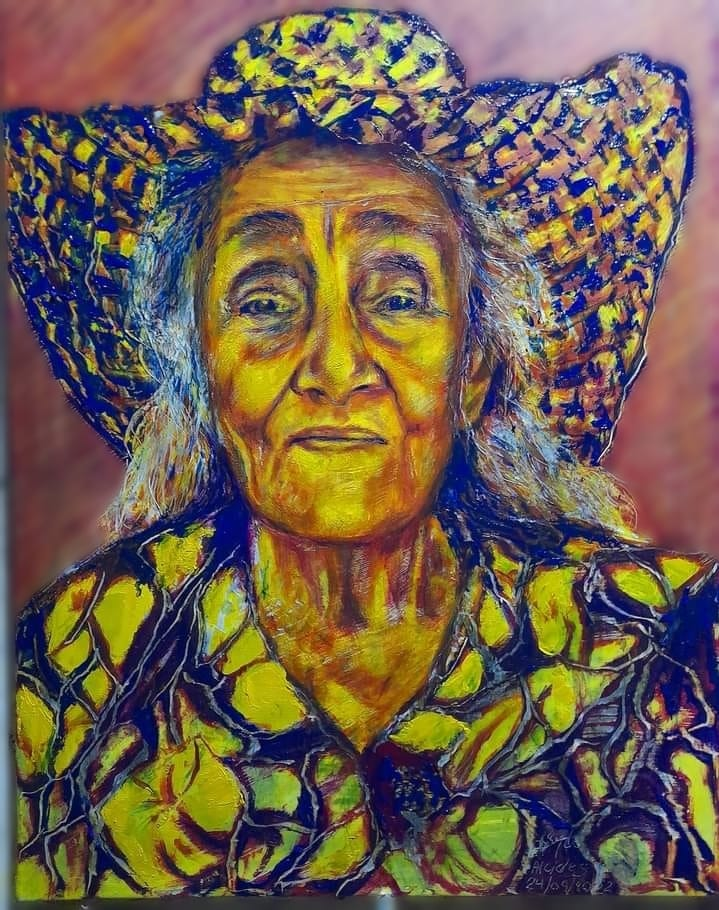
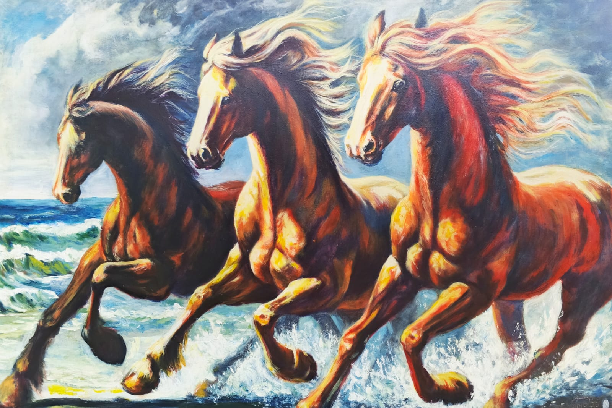
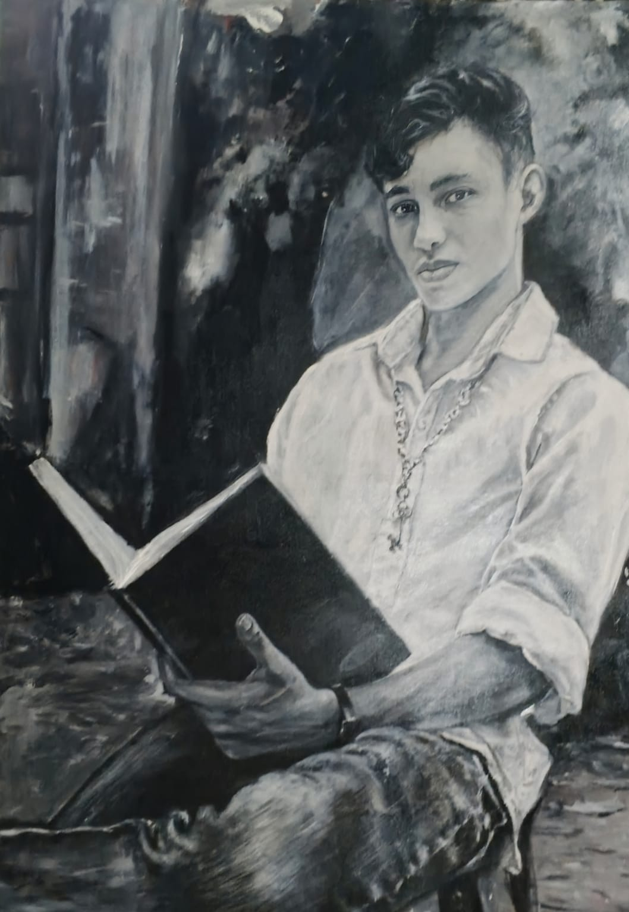
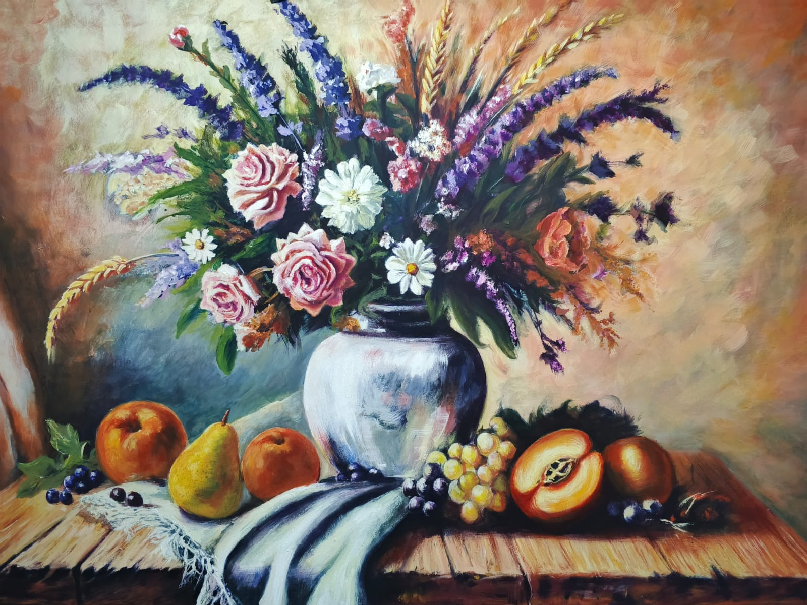
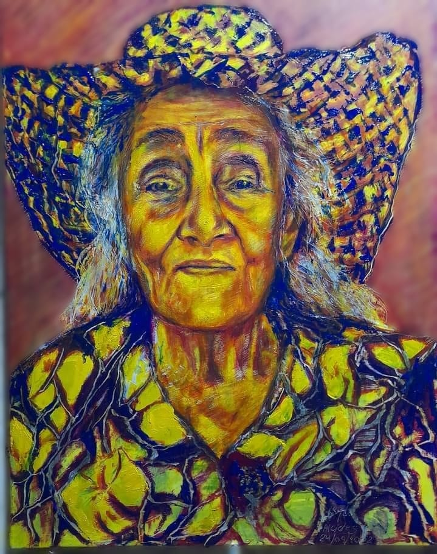
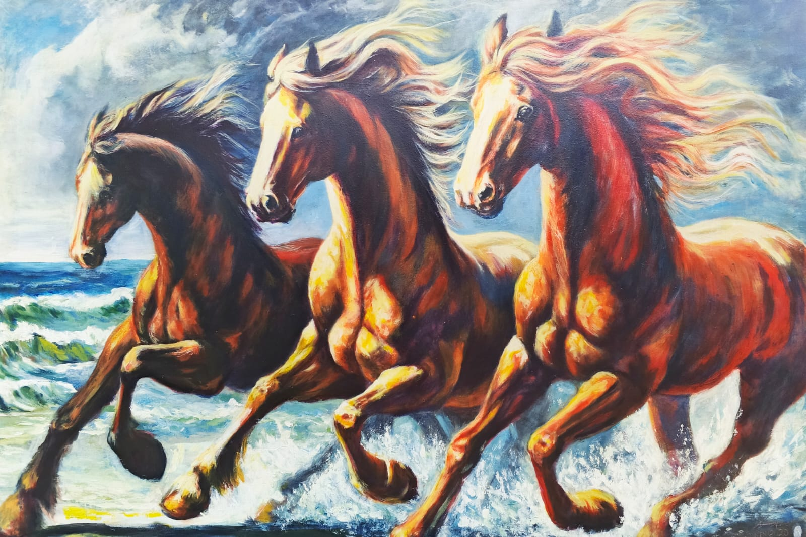

Quién soy
Mi nombre es Alcides, soy cucuteño, nacido en el corazón de Norte de Santander, Colombia. Desde pequeño descubrí mi pasión por el dibujo y la pintura. He dedicado mi vida al arte, explorando técnicas como el acrílico sobre lienzo, el carboncillo y el óleo. Cada obra que realizo es una búsqueda por expresar emociones, capturar momentos y reflejar el alma humana a través del color, la forma y la luz.

Qué Ofrezco
- Retratos personalizados (realistas, estilizados o conceptuales)
- Restauración artística de fotografías antiguas
- Pintura por encargo (familiares, mascotas, paisajes, homenajes)
- Asesorías artísticas para nuevos pintores y coleccionistas
Técnicas que utilizo
- ✨ Acrílico sobre lienzo: Técnica principal. Permite jugar con capas, texturas y contrastes para crear retratos vibrantes y llenos de vida.
- ✍️ Carboncillo: Ideal para retratos expresivos en blanco y negro, donde la sombra y la luz construyen atmósferas íntimas.
- 🎨 Óleo: Utilizado para lograr profundidad visual y acabados intensos y atemporales.
- 🖼️ Restauración artística: Transformo fotografías antiguas en piezas renovadas, cargadas de emoción y detalle.
Mis Trabajos

 







Contáctame
- Whatsapp: +57 317 7046601
- Email: ayy020252s@gmail.com
- Mi Youtube
- Mi Instagram
- Mi FaceBook
- Mi TikTok